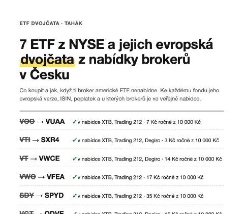

ISINy všech dvojčat a postup nákupu u XTB a Trading 212 krok za krokem. PDF hned a zdarma.
Data od správců fondů a brokerů, ověřeno 10. 10. 2026 (zdroje). Není to investiční doporučení.
Evropské dvojče VOO je VUAA
VOOVUAA
Vanguard S&P 500 UCITS ETF (USD) Accumulating
Kde ho najdeš
✓ Je ve veřejné nabídce XTB a Trading 212. Hledej ticker VUAA, v eurech.
Poplatek
7 Kč ročně z každých 10 000 Kč (0,07 %). VOO má 0,03 % (3 Kč).
Index
Stejný indexS&P 500.
Dividendy
Nevyplácí, investuje je zpátky do fondu. VOO je vyplácí čtvrtletně.
Nejbližší evropská obdoba VTI je SXR4
VTISXR4
iShares MSCI USA UCITS ETF (Acc)
Kde ho najdeš
✓ Je ve veřejné nabídce XTB, Trading 212 a Degira. Hledej ticker SXR4, v eurech.
Poplatek
3 Kč ročně z každých 10 000 Kč (0,03 %). Stejně jako u VTI.
Index
Podobný, ne stejnýSXR4 sleduje MSCI USA a drží 515 titulů, VTI celý americký trh s 3 507 akciemi. Přesné dvojče celého trhu jsme mezi evropskými fondy nenašli.
Dividendy
Nevyplácí, investuje je zpátky do fondu. VTI je vyplácí čtvrtletně.
✓ Je ve veřejné nabídce XTB, Trading 212 a Degira. Hledej ticker VWCE, v eurech.
Poplatek
14 Kč ročně z každých 10 000 Kč (0,14 %). VT má 0,06 % (6 Kč).
Index
Podobný, ne stejnýVWCE sleduje FTSE All-World, tedy velké a střední firmy z celého světa (3 784 akcií). VT sleduje širší FTSE Global All Cap (10 088 akcií).
Dividendy
Nevyplácí, investuje je zpátky do fondu. VT je vyplácí čtvrtletně.
Fondy, které se v EU prodávají drobným investorům, potřebují dokument s klíčovými informacemi (KID). Americké fondy jako VOO ho nevydávají, a tak je brokeři často nenabízejí, nebo jen jako CFD. To je derivát, se kterým fond samotný nevlastníš.
Evropská dvojčata KID mají, takže je brokeři nabízet můžou.
Odkud máme data
Všechno jsme vzali přímo z webů správců fondů (Vanguard, iShares, State Street). Jestli je fond v nabídce, jsme ověřili ve veřejných seznamech produktů brokerů (XTB, Trading 212, Degiro). Stav k 10. 10. 2026. Jestli ho koupíš ve svém účtu, si ověř přímo v aplikaci brokera: nabídka se může lišit podle typu účtu a mezitím se může změnit.
Poplatky i velikost fondů se mění. Před nákupem si je zkontroluj v dokumentu KID u svého brokera.
Nejde o investiční doporučení. Ukazujeme, jaké fondy existují a kolik stojí, co koupíš, je tvoje rozhodnutí. Hodnota investice může klesnout a zpátky můžeš dostat méně, než vložíš.
Stránku provozuje Daniel Kuchválek jako ukázku do výběrového řízení.
Tahák: ISINy dvojčat a postup nákupu krok za krokem

Postup nákupu u XTB a Trading 212 krok za krokem, se zdrojem u každého kroku.
ISIN a ticker všech 7 dvojčat. Zkopíruješ je rovnou do aplikace brokera.
Poplatky originálů a dvojčat vedle sebe.
Časté otázky
Je to zdarma?
Ano. Srovnání i tahák jsou zdarma. Chceme jen tvůj e-mail.
Co uděláte s mým e-mailem?
Tahle stránka je ukázka do výběrového řízení. E-mail uloží Daniel Kuchválek jen pro ukázku, žádné e-maily ti posílat nebude, nikomu ho nepředá a nejpozději 31. 12. 2026 ho smaže. Podrobnosti najdeš v zásadách ochrany osobních údajů.
Je dvojče úplně stejné jako originál?
U VOO, SDY a AGG sleduje dvojče stejný index. U VTI, VT, VWO a VGT je index podobný, ne stejný. Rozdíl vždycky píšeme u výsledku.
Dá se VOO někde koupit?
Někdy ano. Když tě broker vede jako profesionálního klienta, KID nepotřebuje. A ČNB připouští, že broker, který jen provádí tvoje pokyny a nic ti nenabízí ani nedoporučuje, KID dávat nemusí. Běžný broker ti ale americké ETF často nenabídne.
Radíte mi, co koupit?
Ne. Ukazujeme, co existuje a kolik to stojí. Rozhodnutí je na tobě.